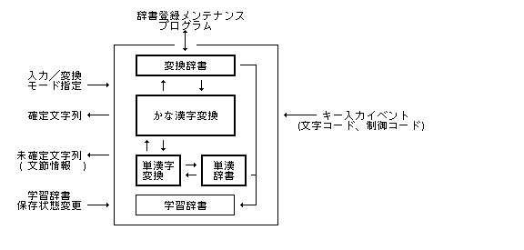
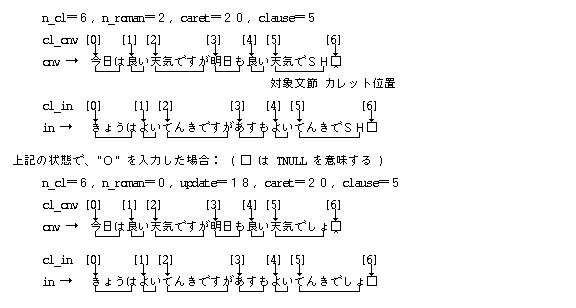
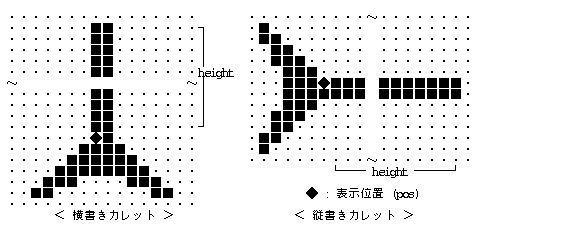

テキスト入力プリミティブ ( TIP ) は, 外殻の HMI функціонал / підсистемаの 1 つとして位置付けられ, かな漢字変換およびローマ字かな変換を通した, テキスト入力のфункціонал / підсистемаを提供しているものである.
прикладний додаток / програмаプログラムは, このテキスト入力プリミティブを使用することにより, かな漢字変換方式に依存しない共通的なインタフェースにより, テキストの入力を行なうことが可能となる.
テキスト入力プリミティブで提供しているфункціонал / підсистемаは, прикладний додаток / програма側でのきめの細かい処理を可能としているため, かなりプリミティブなレベルであり, また文字の表示функціонал / підсистемаは, 一切含まれていない.
テキスト入力プリミティブのфункціонал / підсистемаとしては, かな漢字変換, ローマ字かな変換の他に, 学習辞書の保存状態の設定 / 変更функціонал / підсистемаが提供される. また, 辞書アクセスや単漢字変換のфункціонал / підсистемаも包含されているが, прикладний додаток / програмаはこれらを特に意識する必要はない. なお, 辞書にない単語の登録функціонал / підсистемаや, 辞書データ交換のための辞書変換функціонал / підсистемаなどの辞書メンテナンスфункціонал / підсистемаは, 1 つの独立したシステムприкладний додаток / програмаとして別に提供されることになる.
なお, テキスト入力プリミティブでは, 関連するфункціонал / підсистемаとして, カレット表示を行なう関数も提供している.
テキスト入力プリミティブは, 一種のフィルターとして以下に示すようなモデルとして表現される. 即ち, 入力として«キー入力Подія (Event)»を受け付け, 出力として«確定文字列»を戻すことになる. さらに補助的な出力として«未確定文字列», «文節情報»等を戻すことになる. なお, テキスト入力プリミティブで保持している文字列全体を«変換中文字列»と呼ぶ. この文字列には, 最新の操作で確定した«確定文字列»と«未確定文字列»が含まれる.

入力モードとしては, 以下の3種類のいずれかを指定することができる. 通常, 入力モードはユーザ毎に固定的なものが使用されるが, 動的に変更することも可能である.
かな漢字変換モードは, 以下の 2 種類のいずれかであり, 自動変換モードでは, 入力した«よみ»が [変換/逆変換] なしに自動的に変換されるモードであり, 指定変換モードは, [変換/逆変換] によってのみ変換されるモードである. 自動変換の場合は, 変換のタイミングにより各種の方法が考えられるが, [変換/逆変換]なしに変換されるものは, 基本的にすべて自動変換とみなすものとする. たとえば, 句読点の入力時や, 入力文字種の切り替わり時点で変換されるものも自動変換と見なす. なお, 両方の変換モードをサポートしているか否かはインプリメントに依存する.
変換モードは, 以下の 2 種類のいずれかであり, 直接モードでは入力した«よみ»が変換なしに直接出力されるモードであり, 変換モードはかな漢字変換モードで指定したかな漢字変換方式で変換されるモードである.
テキスト入力プリミティブでは, 以下に示すようなфункціонал / підсистемаをサポートすることが可能であり, これらの操作は, функціонал / підсистемаキーに対応するキー入力Подія (Event)によって行なわれる. ただし, こ れらのфункціонал / підсистемаを実際にサポートしているか否かは, かな漢字変換のアルゴリズムに依存する.
テキスト入力プリミティブの動作環境をテキスト入力ポートと呼ぶ. прикладний додаток / програмаはテキスト入力ポートをオープンし, オープン時に得られるIDを使用して以後の入力処理を行なうことになる. テキスト入力ポートはオープンしたПроцес (Process)にのみ有効であり, そのПроцес (Process)が終了した場合は自動的に削除される.
テキスト入力ポートのオープン時には, 以下に示すテキスト入力Запис (Record)を指定する必要があり, 指定したテキスト入力Запис (Record)にテキスト入力ポートの現在の状態が戻されることになる.
typedef struct {
W n_out; /* 確定文節数 */
W n_cl; /* 全文節数 */
W n_roman; /* 部分ローマ字数 */
W update; /* 表示更新開始文字位置 */
UW caret; /* 現在のカレット位置 */
UW clause; /* 現在対象とする文節番号および状態 */
W* cl_cnv; /* 変換中文字列の文節位置配列 */
TC* cnv; /* 変換中文字列 */
W* cl_in; /* 入力(よみ)文字列の文節位置配列 */
TC* in; /* 入力(よみ)文字列 */
} TIPREC;
n_out :
cnv で示される変換中文字列の先頭からの文節数を示す.
n_out で示される数の文節は,
続くテキスト入力ポートへの入力処理で削除されるので,
n_out ≠ 0 の時は,
прикладний додаток / програмаは, 指定された文節数のデータを必ず取りだしておく必要がある. n_out として先頭のいくつかの文節が確定されることがある.
n_cl :
n_roman :
例: cnv → ・・・・き n_roman =0
・・・・きS n_roman =1
・・・・きSH n_roman =2
・・・・汽車 n_roman =0
update :
caret :
xxxx xxxx xxxx xxxx xPPP PPPP PPPP PPPP
P :
変換中文字列内で n_out
で示される確定文節の直後の文節の先頭文字を"0"とした場合の,
カレットの直後に位置する文字の位置.
すなわち, 未確定文字列内での文字位置.
X :
clause :
XXXX XXXX XXXX XXXX MPPP PPPP PPPP PPPP
M :
P:
変換中文字列内で n_out で示される確定文節の直後の文節を
"0"とした場合の文節の位置. すなわち,
未確定文字列内での文節位置.
X :
cl_cnv :
(n_cl+1) 個の要素からなるワード配列へのвказівник (Pointer)であり,
各文節の先頭の文字位置を表わす.
文字位置は "0" から始まるため先頭の要素は常に
"0" となり,
最後の要素は変換中文字列の最後の TNULL(0) の文字位置であり,
変換中文字列全体の文字数となる. cnv :
n_out = 0 ときは, 未確定文字列のみとなり,
n_our = n_cl のときは, 確定文字列のみとなる.
変換中文字列の最後には TNULL(0) が入っている.
in_cnv :
(n_cl + 1) 個の要素からなるワード配列へのвказівник (Pointer)であり,
各文節の先頭の文字位置を表わす.
文字位置は "0" から始まるため先頭の要素は常に "0" となり,
最後の要素は入力 ( よみ ) 文字列の最後の TNULL(0)
の文字位置であり,
入力 ( よみ ) 文字列全体の文字数となる.
in :
TNULL(0) が入っている.
cl_cnv, cnv, cl_in, in は,
いずれもテキスト入力ポート内部に確保されたバッファへのвказівник (Pointer)であり,
TIPREC には, このвказівник (Pointer)自体が設定される.
一般に自動変換の場合は, テキスト入力ポートへのキー入力のたびに, 変換中文字列の状態が変化し, 逐次確定された文節が掃き出されることになるが, 指定変換の場合は, [変換 / 逆変換]を入力するまでは, 変換中文字列と入力文字列は同一であり, 文節数は常に "1" となる.
以下にテキスト入力Запис (Record)の内容の例を示す.

カレットは文字の挿入位置を示す山形のシンボルであり, 通常は適当な周期でブПосилання (Link)している. カレットは, 何も選択されていないことを示す, 選択ギャップ ( ヌル選択 ) の縦棒と結びついた場合は, 文字カーソルの意味を持つことになる.
テキスト入力プリミティブでは,
カレット ( 文字カーソル ) の表示をサポートするための関数が用意されており,
以下のструктура даних Cによりカレットが定義される.
カレット表示の関数では,
表示するカレットの状態を保持していないため,
この CARET структура даних Cの中に,
カレットの状態が保持されることになる.
typedef struct {
W sts; /* 0:消去状態 1:表示状態 */
W gid; /* 描画環境ID */
PNT pos; /* 表示位置 */
W height; /* 表示高さ */
UW kind; /* カレット種類 0:横 1:縦 */
COLOR color; /* カレットの表示カラー */
} CARET;
sts :
idsp_car() )
により自動的に更新されるが,
カレットの表示状態に応じて直接変更してもよい.
gidn ：
pos ：
height ：
height = 0 の場合は,
選択ギャップは表示されず, カレットのみの表示となる.
kind :
XXXX XXXX XXXX XXXX XXXX XXXX XXXX XXXD
D:
X:
color :
通常カレットの標準形状を, 以下に示すが詳細はインプリメントに依存する.

カレットの表示は, 基本的に入力受付状態のウィンドウに対してのみ行なわれる.
#define TIP_KANA 0x0000 /* かな入力モード */ #define TIP_ROMAN1 0x0001 /* ローマ字入力モード(n) */ #define TIP_ROMAN2 0x0002 /* ローマ字入力モード(nn) */
#define TIP_DIRMD 0x0100 /* 直接モード */ #define TIP_CNVMD 0x0000 /* 変換モード */
#define TIP_AUTO 0 /* 自動変換モード */ #define TIP_MANUAL 1 /* 指定変換モード */
#define TIP_OUT 0x1 /* 確定文節が発生した */ #define TIP_CNV 0x2 /* 未確定文節が変更された */ #define TIP_CAR 0x4 /* カレット位置が変化した */ #define TIP_CL 0x8 /* 対象文節, または区切り位置が変化した */
#define TIP_DIC_COMMON 0x00000001 /* 基本辞書 */ #define TIP_DIC_SINGLE 0x00000002 /* 単漢字辞書 */ #define TIP_DIC_USR 0x00000004 /* ユーザ辞書 */
typedef struct {
W n_out; /* 確定文節数 */
W n_cl; /* 全文節数 */
W n_roman; /* 部分ローマ字数 */
W update; /* 表示更新開始文字位置 */
UW caret; /* 現在のカレット位置 */
UW clause; /* 現在対象とする文節番号および状態 */
W* cl_cnv; /* 変換中文字列の文節位置配列 */
TC* cnv; /* 変換中文字列 */
W* cl_in; /* 入力文字列の文節位置配列 */
TC* in; /* 入力文字列 */
} TIPREC;
#define TIP_YOMIMOD 0x80000000 /* 文節の M フラグ */
typedef struct {
W sts; /* 0:消去状態 1:表示状態 */
W gid; /* 描画環境ID */
PNT pos; /* 表示位置 */
W height; /* 表示高さ */
UW kind; /* カレット種類 0:横 1:縦 */
COLOR color; /* カレットの表示カラー */
} CARET;
ここでは, テキスト入力プリミティブが外殻の拡張системний виклик (System Call)としてサポートしている各関数の詳細を説明する.
関数はすべて WERR 型の関数値をとり,
何らかのПомилкаがあった場合は«負»のкод помилкиが戻る.
Успішне виконання終了時には«0»または«正»の値が戻る.
各関数のкод помилкиとしては, ここで示した以外にも, 核や他の外殻でПомилкаが検出された場合は, 以下のкод помилкиが直接戻る場合がある.
E_xxx :
E_NOMEM, E_NOSPC, E_PAR 等 )
EG_xxx :
EG_ADR 等 )
また, 各関数のпараметриの説明では, 以下に示す記述方法を使用している.
( x ‖ y ‖ z ) -- x, y, z のいずれか1つを意味する.
| -- OR で指定可能なことを意味する.
[ ] -- 省略可能なことを意味する.
|
WERR ichg_mod(W mode)
W mode ::= ( TIP_KANA ‖ TIP_ROMAN1 ‖ TIP_ROMAN2)
TIP_KANA 0 かな入力モード
TIP_ROMAN1 1 ローマ字入力モード1 (n方式)
TIP_ROMAN2 2 ローマ字入力モード2 (nn方式)
>= 0 Успішне виконання(関数値は変更前の入力モード) < 0 Помилка (Код помилки)
テキスト入力モードを mode で指定した内容に変更し,
変更前のテキスト入力モードを関数値として戻す.
mode<0 の場合は入力モードを変更せずに現在の入力モードを関数値として戻す.
テキスト入力モードはグローバルに有効であり, 入力モードを変更した場合は, 全てのПроцес (Process)でオープンしているテキスト入力ポートに対して, 変更した時点から適用される.
EX_PAR : параметриが不正である(mode が不正)
|
WERR ichg_lrn(UW kind, W stat)
UW kind 辞書の種類
W stat 0で保存しないことを指定
>0で保存することを指定
>= 0 Успішне виконання(関数値は変更前の学習辞書の保存状態) < 0 Помилка (Код помилки)
kind で指定した種類の学習辞書の保存状態を,
stat で指定した内容に変更し,
変更前の学習辞書の保存状態を関数値として戻す.
stat<0 の場合は,
保存状態を変更せずに現在の保存状態を関数値として戻す.
kind は, ビット対応で辞書の種類を指定する
( 対応ビット = 1 で指定 ) .
0XXX XXXX XXXX XXXX
|------+------| ||
| |+-- 基本辞書
インプリメント依存辞書 +---- 単漢字変換辞書
なお, 学習辞書の保存状態の変更による実際の効果はインプリメントに依存する.
EX_NOSPT : 現在のインプリメントではそのфункціонал / підсистемаをサポートしていない EX_PAR : параметриが不正である(kind または stat が不正)
|
WERR iopn_tip(TIPREC *tip, W mode)
TIPREC *tip テキスト入力ポート用Запис (Record)
W mode ::= ( TIP_DIRMD ‖ TIP_CNVMD ) | ( TIP_AUTO ‖ TIP_MANUAL )
TIP_DIRMD 0x100 直接モード(変換なし)
TIP_CNVMD 0 変換モード
TIP_AUTO 0 自動変換モード
TIP_MANUAL 1 指定(マニュアル)変換モード
TIP_DIRMD を指定した時,
TIP_AUTO / TIP_MANUAL の指定は,
意味を持たず無視される.
>= 0 Успішне виконання(関数値はテキスト入力ポートID(tipid)) < 0 Помилка (Код помилки)
テキスト入力ポートを新規にオープンし, そのID ( tipid ≧ 0 ) を関数値として戻す.
tip はオープンしたテキスト入力ポートに割り当てられる,
TIPREC の領域へのвказівник (Pointer)であり,
以後の操作でのテキスト入力ポートの状態がセットされることになる.
オープン時には, tip で指定した TIPREC
の内容はすべて "0" に初期化される.
mode は変換モードの指定であるが,
インプリメントによってサポートされていない場合はПомилкаとなる.
EX_ADR : адреса пам'яті(tip)のアクセスは許されていない
EX_LIMIT : システムの制限を超えた
EX_NOSPC : システムのОперативна пам'ять (Memory)領域が不足した
EX_NOSPT : 現在のインプリメントではそのфункціонал / підсистемаをサポートしていない
(サポートしない変換モード)
EX_PAR : параметриが不正である(mode が不正)
|
ERR icls_tip(W tipid)
W tipid テキスト入力ポートID
>= 0 Успішне виконання < 0 Помилка (Код помилки)
tipid で指定したテキスト入力ポートをクローズする.
|
WERR iput_key(W tipid, EVENT *evt)
W tipid テキスト入力ポートID EVENT *evt キーПодія (Event)
>= 0 Успішне виконання(関数値はテキスト入力ポートの変化状態) < 0 Помилка (Код помилки)
tipid で指定したテキスト入力ポートに
*evt で指定したキー入力Подія (Event)
( EV_KEYDWN または EV_AUTKEY ) を入力し,
その結果のテキスト入力ポートの状態をオープン時に割り当てた
TIPREC に戻す.
関数値として, テキスト入力ポートの状態変化が以下のビット対応で戻される. 何の変化も発生しなかった場合は, 関数値は"0"となる. прикладний додаток / програмаはこの関数値に応じた適当な処理を行なう必要がある.
TIP_OUT 0x1 確定文節が発生した
TIP_CNV 0x2 未確定文字列が変更された
TIP_CAR 0x4 カレット位置が変化した
TIP_CL 0x8 対象文節が移動した, または区切り位置が変化した
*evt で指定したПодія (Event)の内容が以下のいずれかの場合はПомилкаとなり,
TIPREC の内容は一切変化しない.
EX_CKEY : 変換中文字列が存在しない状態でфункціонал / підсистемаキーコードが入力された EX_KEY : 不正キーコードである EX_LIMIT : システムの制限を超えた(変換中文字列が長すぎる) EX_PAR : параметриが不正である(EV_KEYDWN, または EV_AUTKEY ではない) EX_TID : テキスト入力ポート(tipid)は存在していない
|
ERR iput_str(W tipid, TC *str)
W tipid テキスト入力ポートID TC *str 文字列
>= 0 Успішне виконання < 0 Помилка (Код помилки)
tipid で指定したテキスト入力ポートに
str で指定した文字列を入力して変換を行ない,
その結果のテキスト入力ポートの状態を, オープン時に割り当てた TIPREC に戻す.
str で指定した文字列は,
ローマ字コードを含まない通常の文字コード,
[スペース(=0x20)]および[リクワイアードスペース(=0xA0)]のみからなる
TNULL(0) で終了する文字列であり,
途中にローマ字コードや, [改行]等の特殊文字キーコード,
[変換]等のфункціонал / підсистемаキーコードが含まれている場合は,
EX_KEY
のПомилкаとなる.
また, 直接モード ( TIP_DIRMD ) でオープンされたテキスト入力ポートを指定した場合は,
EX_NOSPT のПомилкаとなる.
Помилкаが発生した場合は,
TIPREC の内容は保証されない.
この関数は, 主に入力済みの文字列に対する再変換の最初の変換時に使用され, テキスト入力ポートに変換中文字列が存在していない状態で使用される. テキスト入力ポートに, 変換中文字列が存在していた状態で使用した場合の結果は, 保証されない.
EX_KEY : 不正キーコードである
EX_LIMIT : システムの制限を超えた(変換中文字列が長すぎる)
EX_NOSPT : 現在のインプリメントではそのфункціонал / підсистемаをサポートしていない
(直接モードでオープンされている)
EX_TID : テキスト入力ポート(tipid)は存在していない
|
WERR ichg_blk(W intvl)
W intvl ブПосилання (Link)周期
>= 0 Успішне виконання(関数値は設定前のブПосилання (Link)周期) < 0 Помилка (Код помилки)
カレットのブПосилання (Link)周期を intvl で指定した値に設定し,
設定以前の値を関数値として戻す.
intvl = 0 の場合は,
ブПосилання (Link)しない事を意味し, intvl<0 の場合は,
設定せずに現在の設定値を戻す.
ブПосилання (Link)周期の単位はミリ秒であるが, 実際にはインプリメントに依存した単位で, 大きな値の方向に丸められることになる.
カレットのブПосилання (Link)周期はグローバルに適用される.
Помилкаは発生しない.
|
ERR idsp_car(CARET *car, W mode)
CARET *car カレットデータ
W mode 表示 / 消去 / ブПосилання (Link)指定
>= 0 Успішне виконання <0 Помилка(код помилки)
car で指定したカレットを mode の指定に従って,
消去 / 表示 / ブПосилання (Link)する.
mode = 0:
car->sts ≠0 の場合,
car->pos, car->height で示されるカレットを消去し,
car->sts を 0 に設定する.
car->sts = 0 の場合は何も行なわない.
> 0 :
car->sts = 0 の場合,
car->pos, car->height で示されるカレットを表示し,
car->sts を 1 に設定する.
car->sts ≠ 0 の場合は何も行なわない.
< 0 :
ブПосилання (Link)の間隔に達していた場合,
car->sts の値に応じて,
car->pos, car ->height
で示されるカレットを表示または消去し,
car->sts を更新する.
ブПосилання (Link)間隔に達していない場合は何も行なわない.
ブПосилання (Link)の場合は, ブПосилання (Link)の周期以内に周期的に
idsp_car (&car, -1)
を実行する必要がある.
カレットの表示を移動する場合は, まず消去を行なった後, カレットの位置, 高さを変更して, 表示を行なうことになる. また, 表示状態で, カレットструктура даних Cのпараметриを変更した場合の動作は保証されない.
EX_ADR : адреса пам'яті(car)のアクセスは許されていない